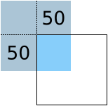
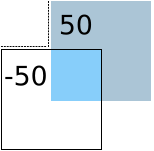
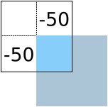
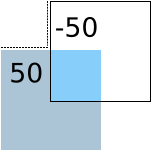

Flickable QML Type
Provides a surface that can be "flicked". More...
Properties
- atXBeginning : bool
- atXEnd : bool
- atYBeginning : bool
- atYEnd : bool
- bottomMargin : real
- boundsBehavior : enumeration
- boundsMovement : enumeration
- contentHeight : real
- contentItem : Item
- contentWidth : real
- contentX : real
- contentY : real
- dragging : bool
- draggingHorizontally : bool
- draggingVertically : bool
- flickDeceleration : real
- flickableDirection : enumeration
- flicking : bool
- flickingHorizontally : bool
- flickingVertically : bool
- horizontalOvershoot : real
- horizontalVelocity : real
- interactive : bool
- leftMargin : real
- maximumFlickVelocity : real
- moving : bool
- movingHorizontally : bool
- movingVertically : bool
- originX : real
- originY : real
- pixelAligned : bool
- pressDelay : int
- rebound : Transition
- rightMargin : real
- synchronousDrag : bool
- topMargin : real
- verticalOvershoot : real
- verticalVelocity : real
- visibleArea
- visibleArea.heightRatio : real
- visibleArea.widthRatio : real
- visibleArea.xPosition : real
- visibleArea.yPosition : real
Signals
Methods
- cancelFlick()
- flick(qreal xVelocity, qreal yVelocity)
- resizeContent(real width, real height, QPointF center)
- returnToBounds()
Detailed Description
The Flickable item places its children on a surface that can be dragged and flicked, causing the view onto the child items to scroll. This behavior forms the basis of Items that are designed to show large numbers of child items, such as ListView and GridView.
In traditional user interfaces, views can be scrolled using standard controls, such as scroll bars and arrow buttons. In some situations, it is also possible to drag the view directly by pressing and holding a mouse button while moving the cursor. In touch-based user interfaces, this dragging action is often complemented with a flicking action, where scrolling continues after the user has stopped touching the view.
Flickable does not automatically clip its contents. If it is not used as a full-screen item, you should consider setting the clip property to true.
Example Usage

The following example shows a small view onto a large image in which the user can drag or flick the image in order to view different parts of it.
import QtQuick Flickable { width: 200; height: 200 contentWidth: image.width; contentHeight: image.height Image { id: image; source: "bigImage.png" } }
Items declared as children of a Flickable are automatically parented to the Flickable's contentItem. This should be taken into account when operating on the children of the Flickable; it is usually the children of contentItem that are relevant. For example, the bound of Items added to the Flickable will be available by contentItem.childrenRect
Examples of contentX and contentY
The following images demonstrate a flickable being flicked in various directions and the resulting contentX and contentY values. The blue square represents the flickable's content, and the black border represents the bounds of the flickable.
The contentX and contentY are both 0. | |
 | The contentX and the contentY are both 50. |
 | The contentX is -50 and the contentY is 50. |
 | The contentX and the contentY are both -50. |
 | The contentX is 50 and the contentY is -50. |
Limitations
Note: Due to an implementation detail, items placed inside a Flickable cannot anchor to the Flickable. Instead, use parent, which refers to the Flickable's contentItem. The size of the content item is determined by contentWidth and contentHeight.
Property Documentation
These properties hold the surface coordinate currently at the top-left corner of the Flickable. For example, if you flick an image up 100 pixels, contentY will increase by 100.
Note: If you flick back to the origin (the top-left corner), after the rebound animation, contentX will settle to the same value as originX, and contentY to originY. These are usually (0,0), however ListView and GridView may have an arbitrary origin due to delegate size variation, or item insertion/removal outside the visible region. So if you want to implement something like a vertical scrollbar, one way is to use y: (contentY - originY) * (height / contentHeight) for the position; another way is to use the normalized values in visibleArea.
See also Examples of contentX and contentY, originX, and originY.
The instantaneous velocity of movement along the x and y axes, in pixels/sec.
The reported velocity is smoothed to avoid erratic output.
Note that for views with a large content size (more than 10 times the view size), the velocity of the flick may exceed the velocity of the touch in the case of multiple quick consecutive flicks. This allows the user to flick faster through large content.
These properties are true if the flickable view is positioned at the beginning, or end respectively.
The dimensions of the content (the surface controlled by Flickable). This should typically be set to the combined size of the items placed in the Flickable.
The following snippet shows how these properties are used to display an image that is larger than the Flickable item itself:
import QtQuick Flickable { width: 200; height: 200 contentWidth: image.width; contentHeight: image.height Image { id: image; source: "bigImage.png" } }
In some cases, the content dimensions can be automatically set based on the childrenRect.width and childrenRect.height properties of the contentItem. For example, the previous snippet could be rewritten with:
contentWidth: contentItem.childrenRect.width; contentHeight: contentItem.childrenRect.height
Though this assumes that the origin of the childrenRect is 0,0.
These properties hold the margins around the content. This space is reserved in addition to the contentWidth and contentHeight.
These properties hold the origin of the content. This value always refers to the top-left position of the content regardless of layout direction.
This is usually (0,0), however ListView and GridView may have an arbitrary origin due to delegate size variation, or item insertion/removal outside the visible region.
These properties describe whether the view is currently moving horizontally, vertically or in either direction, due to the user flicking the view.
These properties describe whether the view is currently moving horizontally, vertically or in either direction, due to the user dragging the view.
These properties describe whether the view is currently moving horizontally, vertically or in either direction, due to the user either dragging or flicking the view.
boundsBehavior : enumeration |
This property holds whether the surface may be dragged beyond the Flickable's boundaries, or overshoot the Flickable's boundaries when flicked.
When the boundsMovement is Flickable.FollowBoundsBehavior, a value other than Flickable.StopAtBounds will give a feeling that the edges of the view are soft, rather than a hard physical boundary.
The boundsBehavior can be one of:
- Flickable.StopAtBounds - the contents can not be dragged beyond the boundary of the flickable, and flicks will not overshoot.
- Flickable.DragOverBounds - the contents can be dragged beyond the boundary of the Flickable, but flicks will not overshoot.
- Flickable.OvershootBounds - the contents can overshoot the boundary when flicked, but the content cannot be dragged beyond the boundary of the flickable. (since
QtQuick 2.5) - Flickable.DragAndOvershootBounds (default) - the contents can be dragged beyond the boundary of the Flickable, and can overshoot the boundary when flicked.
See also horizontalOvershoot, verticalOvershoot, and boundsMovement.
boundsMovement : enumeration |
This property holds whether the flickable will give a feeling that the edges of the view are soft, rather than a hard physical boundary.
The boundsMovement can be one of:
- Flickable.StopAtBounds - this allows implementing custom edge effects where the contents do not follow drags or flicks beyond the bounds of the flickable. The values of horizontalOvershoot and verticalOvershoot can be utilized to implement custom edge effects.
- Flickable.FollowBoundsBehavior (default) - whether the contents follow drags or flicks beyond the bounds of the flickable is determined by boundsBehavior.
The following example keeps the contents within bounds and instead applies a flip effect when flicked over horizontal bounds:
Flickable { id: flickable boundsMovement: Flickable.StopAtBounds boundsBehavior: Flickable.DragAndOvershootBounds transform: Rotation { axis { x: 0; y: 1; z: 0 } origin.x: flickable.width / 2 origin.y: flickable.height / 2 angle: Math.min(30, Math.max(-30, flickable.horizontalOvershoot)) } }
The following example keeps the contents within bounds and instead applies an opacity effect when dragged over vertical bounds:
Flickable { boundsMovement: Flickable.StopAtBounds boundsBehavior: Flickable.DragOverBounds opacity: Math.max(0.5, 1.0 - Math.abs(verticalOvershoot) / height) }
See also boundsBehavior, verticalOvershoot, and horizontalOvershoot.
contentItem : Item |
The internal item that contains the Items to be moved in the Flickable.
Items declared as children of a Flickable are automatically parented to the Flickable's contentItem.
Items created dynamically need to be explicitly parented to the contentItem:
Flickable { id: myFlickable function addItem(file) { var component = Qt.createComponent(file) component.createObject(myFlickable.contentItem); } }
flickDeceleration : real |
This property holds the rate at which a flick will decelerate: the higher the number, the faster it slows down when the user stops flicking via touch. For example 0.0001 is nearly "frictionless", and 10000 feels quite "sticky".
The default value is platform dependent. Values of zero or less are not allowed.
flickableDirection : enumeration |
This property determines which directions the view can be flicked.
- Flickable.AutoFlickDirection (default) - allows flicking vertically if the contentHeight is not equal to the height of the Flickable. Allows flicking horizontally if the contentWidth is not equal to the width of the Flickable.
- Flickable.AutoFlickIfNeeded - allows flicking vertically if the contentHeight is greater than the height of the Flickable. Allows flicking horizontally if the contentWidth is greater than to the width of the Flickable. (since
QtQuick 2.7) - Flickable.HorizontalFlick - allows flicking horizontally.
- Flickable.VerticalFlick - allows flicking vertically.
- Flickable.HorizontalAndVerticalFlick - allows flicking in both directions.
horizontalOvershoot : real |
This property holds the horizontal overshoot, that is, the horizontal distance by which the contents has been dragged or flicked past the bounds of the flickable. The value is negative when the content is dragged or flicked beyond the beginning, and positive when beyond the end; 0.0 otherwise.
Whether the values are reported for dragging and/or flicking is determined by boundsBehavior. The overshoot distance is reported even when boundsMovement is Flickable.StopAtBounds.
See also verticalOvershoot, boundsBehavior, and boundsMovement.
interactive : bool |
This property describes whether the user can interact with the Flickable. A user cannot drag or flick a Flickable that is not interactive.
By default, this property is true.
This property is useful for temporarily disabling flicking. This allows special interaction with Flickable's children; for example, you might want to freeze a flickable map while scrolling through a pop-up dialog that is a child of the Flickable.
maximumFlickVelocity : real |
This property holds the maximum velocity that the user can flick the view in pixels/second.
The default value is platform dependent.
pixelAligned : bool |
This property sets the alignment of contentX and contentY to pixels (true) or subpixels (false).
Enable pixelAligned to optimize for still content or moving content with high constrast edges, such as one-pixel-wide lines, text or vector graphics. Disable pixelAligned when optimizing for animation quality.
The default is false.
pressDelay : int |
This property holds the time to delay (ms) delivering a press to children of the Flickable. This can be useful where reacting to a press before a flicking action has undesirable effects.
If the flickable is dragged/flicked before the delay times out the press event will not be delivered. If the button is released within the timeout, both the press and release will be delivered.
Note that for nested Flickables with pressDelay set, the pressDelay of outer Flickables is overridden by the innermost Flickable. If the drag exceeds the platform drag threshold, the press event will be delivered regardless of this property.
See also QStyleHints.
rebound : Transition |
This holds the transition to be applied to the content view when it snaps back to the bounds of the flickable. The transition is triggered when the view is flicked or dragged past the edge of the content area, or when returnToBounds() is called.
import QtQuick 2.0 Flickable { width: 150; height: 150 contentWidth: 300; contentHeight: 300 rebound: Transition { NumberAnimation { properties: "x,y" duration: 1000 easing.type: Easing.OutBounce } } Rectangle { width: 300; height: 300 gradient: Gradient { GradientStop { position: 0.0; color: "lightsteelblue" } GradientStop { position: 1.0; color: "blue" } } } }
When the above view is flicked beyond its bounds, it will return to its bounds using the transition specified:
If this property is not set, a default animation is applied.
synchronousDrag : bool |
If this property is set to true, then when the mouse or touchpoint moves far enough to begin dragging the content, the content will jump, such that the content pixel which was under the cursor or touchpoint when pressed remains under that point.
The default is false, which provides a smoother experience (no jump) at the cost that some of the drag distance is "lost" at the beginning.
verticalOvershoot : real |
This property holds the vertical overshoot, that is, the vertical distance by which the contents has been dragged or flicked past the bounds of the flickable. The value is negative when the content is dragged or flicked beyond the beginning, and positive when beyond the end; 0.0 otherwise.
Whether the values are reported for dragging and/or flicking is determined by boundsBehavior. The overshoot distance is reported even when boundsMovement is Flickable.StopAtBounds.
See also horizontalOvershoot, boundsBehavior, and boundsMovement.
These properties describe the position and size of the currently viewed area. The size is defined as the percentage of the full view currently visible, scaled to 0.0 - 1.0. The page position is usually in the range 0.0 (beginning) to 1.0 minus size ratio (end), i.e. yPosition is in the range 0.0 to 1.0-heightRatio. However, it is possible for the contents to be dragged outside of the normal range, resulting in the page positions also being outside the normal range.
These properties are typically used to draw a scrollbar. For example:
Rectangle { width: 200; height: 200 Flickable { id: flickable ... } Rectangle { id: scrollbar anchors.right: flickable.right y: flickable.visibleArea.yPosition * flickable.height width: 10 height: flickable.visibleArea.heightRatio * flickable.height color: "black" } }
Signal Documentation
dragEnded() |
This signal is emitted when the user stops dragging the view.
If the velocity of the drag is sufficient at the time the touch/mouse button is released then a flick will start.
Note: The corresponding handler is onDragEnded.
dragStarted() |
This signal is emitted when the view starts to be dragged due to user interaction.
Note: The corresponding handler is onDragStarted.
flickEnded() |
This signal is emitted when the view stops moving after a flick or a series of flicks.
Note: The corresponding handler is onFlickEnded.
flickStarted() |
This signal is emitted when the view is flicked. A flick starts from the point that the mouse or touch is released, while still in motion.
Note: The corresponding handler is onFlickStarted.
movementEnded() |
This signal is emitted when the view stops moving due to user interaction or a generated flick(). If a flick was active, this signal will be emitted once the flick stops. If a flick was not active, this signal will be emitted when the user stops dragging - i.e. a mouse or touch release.
Note: The corresponding handler is onMovementEnded.
movementStarted() |
This signal is emitted when the view begins moving due to user interaction or a generated flick().
Note: The corresponding handler is onMovementStarted.
Method Documentation
cancelFlick() |
Cancels the current flick animation.
flick(qreal xVelocity, qreal yVelocity) |
Flicks the content with xVelocity horizontally and yVelocity vertically in pixels/sec.
Calling this method will update the corresponding moving and flicking properties and signals, just like a real touchscreen flick.
Resizes the content to width x height about center.
This does not scale the contents of the Flickable - it only resizes the contentWidth and contentHeight.
Resizing the content may result in the content being positioned outside the bounds of the Flickable. Calling returnToBounds() will move the content back within legal bounds.
returnToBounds() |
Ensures the content is within legal bounds.
This may be called to ensure that the content is within legal bounds after manually positioning the content.